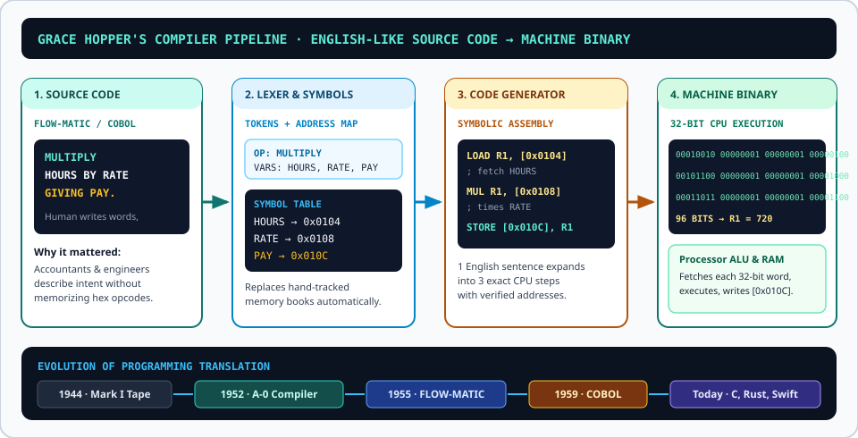

Grace Hopper · Compiler & Nanosecond Studio
COBOL Compiler VM · Speed-of-Light Wire · 1947 Mark II DebuggerStudio Mastery Challenges
| # | Assembly | Meaning |
|---|
| # | Hex | 32-Bit Machine Word |
|---|
| Symbol | Address | Value | Line |
|---|
Who Was Grace Hopper?
Grace Brewster Murray Hopper (December 9, 1906 – January 1, 1992) was a Yale-trained mathematician, U.S. Navy rear admiral, and pioneering computer scientist who reshaped how humans communicate with machines. As a child in New York City, she famously dismantled seven alarm clocks in the house to figure out how their gears meshed. She earned a B.A. in mathematics and physics from Vassar College in 1928 and a Ph.D. in mathematics from Yale University in 1934, then taught mathematics at Vassar.
In 1943, during World War II, Hopper joined the U.S. Naval Reserve — obtaining an age and weight waiver — and was assigned to the Bureau of Ships Computation Project at Harvard under Howard Aiken. There she programmed the Harvard Mark I and Mark II electromechanical computers and wrote the manual for how machines were operated and debugged.
After the war, Hopper joined the team building UNIVAC I, the first commercial electronic computer in the United States. In 1952 she completed A-0, the first compiler/linker that turned symbolic subroutine calls into executable machine code. Against skepticism that computers could ever process human words, she led the creation of FLOW-MATIC (1955), the first English-language data-processing language, which directly inspired COBOL in 1959.
Real Machines, Real Artifacts
Every workspace in the studio above connects to surviving historical photographs and artifacts. Click any image to open the full-screen classroom lightbox and examine the details together.
.jpg?width=600)


A Life & Legacy Ahead of Its Time
Switch between Track and List views or press Play to tour how Hopper’s career bridged electromechanical relays and modern high-level software.
- Born December 9, 1906 as Grace Brewster Murray in New York City; takes apart alarm clocks to study how gears work.
- Graduates Phi Beta Kappa from Vassar College with a B.A. in mathematics and physics.
- Earns a Ph.D. in mathematics from Yale University, becoming one of very few women to hold the degree at the time.
- Joins the U.S. Naval Reserve during World War II after securing an age and weight waiver.
- Assigned to Harvard’s Bureau of Ships Computation Project, writing programs and the first manual for the Mark I.
- On September 9, 1947, her team finds a real moth wedged in Relay #70, Panel F of the Mark II and logs “First actual case of bug being found.”
- Completes A-0 at Remington Rand while working on UNIVAC I — the first program to link symbolic subroutines into machine code.
- Leads development of FLOW-MATIC, proving business programs can be written in English words instead of numbers.
- Serves as technical advisor to CODASYL as FLOW-MATIC inspires COBOL (Common Business-Oriented Language).
- Retires from the Navy aboard the USS Constitution at age 79 as Rear Admiral, the oldest active-duty officer at the time.
- Awarded the National Medal of Technology, becoming its first individual female recipient.
- Dies January 1, 1992 in Arlington, Virginia, and is buried with full military honors at Arlington National Cemetery.
- Posthumously awarded the Presidential Medal of Freedom for foundational contributions to computer science.
How a Compiler Works: Words to Machine Binary
Before Hopper’s A-0 (1952) and FLOW-MATIC (1955), writing software meant manually consulting thick codebooks to look up numeric instruction opcodes and tracking every memory address by hand. One transposed digit could crash a run or silently corrupt payroll totals. Hopper argued that the computer itself should handle translation and bookkeeping so human engineers could focus on logic.
Human writes English-like statements such as MULTIPLY HOURS BY RATE GIVING PAY.
Splits keywords and assigns every variable a unique hex address (e.g. 0x0104).
Expands one high-level sentence into exact CPU steps (LOAD, MUL, STORE).
Encodes 32-bit binary words that flip real hardware switches inside the processor.
CPU Execution
From A-0 and FLOW-MATIC to Modern Languages
| Era / System | How Programmers Wrote It | Key Breakthrough |
|---|---|---|
| Pre-1952 Machine Code | 00010010 00000001 00000001 00000100 |
Raw binary/octal opcodes and manual hex addresses |
| 1952 · A-0 | Symbolic subroutine call + parameter tape | First automatic linker/compiler pulling tested routines |
| 1955 · FLOW-MATIC | MULTIPLY HOURS BY RATE GIVING PAY. |
First English-word business programming language |
| 1959 · COBOL | IF STOCK LESS THAN 10 DISPLAY "REORDER". |
Portable standard running across different hardware brands |
| Modern Python / Rust / Swift | pay = hours * rate |
Rich readable syntax compiled or interpreted automatically |
How did A-0 differ from FLOW-MATIC and COBOL?
Did Hopper write COBOL by herself?
Did Hopper invent the word “bug”?
What is the difference between a compiler and an interpreter?
Hopper Hands Out Nanoseconds
Hopper was famous for turning invisible timing scales into physical props you could hold. In this 1982 lecture at the National Security Agency, she explains why a billionth of a second — a nanosecond — dictates the physical size of every fast computer. The video pauses twice to ask you to predict before revealing the answer.
At 3 GHz, one clock tick lasts only 0.333 ns — giving a signal on a silicon board just ~5 cm of travel budget. Test this live in Tab 2 above.
Trace It Yourself: Compiler & Nanosecond Math
Work through these values by hand before checking your answers. Nothing is pre-filled, so you can verify your own reasoning.
| Step | Operation | Target | Your Result |
|---|
Key Contributions, Vocabulary & Legacy
Proved a computer could translate symbolic instructions into machine code automatically, eliminating tedious manual coding.
Built the first English-word business language and helped shape COBOL, which still powers global banking and payroll systems.
Championed portable languages and compiler validation suites so programs could move across new computer hardware.
Used 11.8-inch nanosecond wires and 984-foot microsecond coils to teach why speed-of-light delays govern chip size.
Her team’s 1947 Relay #70 moth logbook turned physical hardware troubleshooting into the enduring story of “debugging.”
Mentored generations of Navy engineers until 1986 and inspired the annual Grace Hopper Celebration for women in computing.
Vocabulary Reference
- Compiler
- A program that translates human-readable source code into machine code before execution.
- Symbol Table
- The compiler’s lookup table mapping variable names like
HOURSto numeric RAM addresses like0x0104. - Machine Code
- Binary instructions (
0s and1s) decoded directly by a processor’s control unit and ALU. - FLOW-MATIC / COBOL
- Hopper’s English-word business programming language and the standardized 1959 language it inspired.
- Nanosecond (ns)
- One billionth of a second (10−9 s) — the time it takes light in vacuum to travel ~29.98 cm (11.8 in).
- Propagation Delay
- The physical time required for an electrical or optical pulse to travel from transmitter to receiver.
- Electromechanical Relay
- An electrically controlled magnetic switch used inside early computers like the Harvard Mark I and II.
- Debugging
- Isolating and fixing hardware or software faults by comparing expected versus actual outputs step by step.
Continue Exploring in ClassroomOS
Practice & Debugging Problems
Completed: 0 / 9Test your understanding of compilers, symbol tables, nanosecond physics, and debugging.
Easy1. In what year did Hopper complete A-0, the first compiler/linker?
Easy2. What job does a compiler’s symbol table perform?
Medium3. COBOL was first specified in 1959. How many years passed between A-0 (1952) and COBOL (1959)?
Easy4. What physical artifact did Hopper’s team tape into the Harvard Mark II logbook on September 9, 1947?
Medium5. Why did Hopper hand out 11.8-inch (30 cm) pieces of wire during her lectures?
Medium6. In a PCB trace where signals travel at half the speed of light (0.50c ≈ 15 cm/ns), how far (in cm) does a signal travel during one 2 GHz clock tick (0.5 ns)?
Debug7. In Tab 1’s Payroll Calculation preset (HOURS = 40, RATE = 18, SUBTRACT 95 FROM PAY), toggling Hand-Code Bug: On mis-punches MUL R1, [0x0104] (HOURS) instead of [0x0108] (RATE). What wrong NET PAY prints?
Debug8. In Tab 3’s Case 1 (Relay #70 jammed open by a moth), the 4-bit input switches are set to 1101 (decimal 13). What broken decimal value appears at the output?
Challenge9. Why was Hopper’s 1950s vision for English-like programming languages initially dismissed by many colleagues?